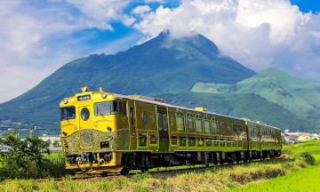
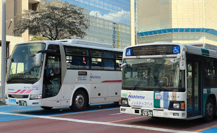
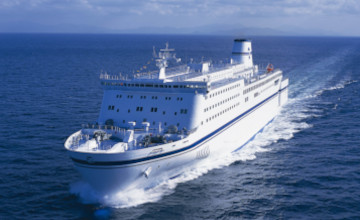
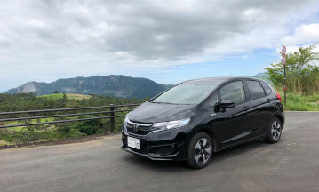
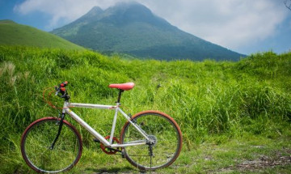

How to get to Kyushu
Kyushu Island, the third largest island in Japan located at the southernmost tip of the four main islands, isn’t the closest one to the country’s main sightseeing spots, yet, it is definitely worth a visit. You can go there by bus, by shinkansen, by air, by ferry or by car, depends on where you are from. For more information, visit here. In this page, we will focus on getting around within Kyushu.
How to get around within Kyushu?
By Train
There are several rail pass options from JR Kyushu. Depending on your travel plans and your budget, you can get an all-Kyushu pass, or focus on the northern or southern part of the island. Speed between major cities by shinkansen to maximize sightseeing time. Within the cities, local and express trains are easy to use. Kyushu is famous for its scenic trains, such as the Limited Express Yufuin no Mori and Limited Express Kawasemi Yamasemi. Some are covered by a JR Kyushu Rail Pass.
By Bus
Bus services cover 2,400 routes within Kyushu's cities and between many destinations. Depending on where you want to go, traveling by bus can be a great option. The SUNQ Pass offers unlimited bus travel in Kyushu including long-distance highway buses, over three consecutive days. You can also check route information and make reservations through atbus-de which covers bus travel in all Kyushu prefectures.
By Ferry
Kyushu is surrounded by sea and dotted with islands, ranging from charming fishing ports to World Heritage sites. Ferries offer a scenic way to get around, and can be more direct than the road routes. The SunQ Pass for buses also covers many ferry services, and there are discount passes in many cities. There are many private ferry companies covering different parts of Kyushu.
By Car
With many quiet country roads, driving is an ideal way to explore Kyushu. Popular driving routes include the Nichinan coast road in Miyazaki, and along the Aso Panorama Line in Kumamoto. You can find car rental agencies at airports and major stations. You can also get a combined rail/drive pass from JR Kyushu. Expressway tolls in Japan can be expensive, but the Kyushu Expressway Pass from Nexco West, allows unlimited driving on Kyushu's expressways for a fixed price. Check their website for tips on driving in Kyushu. You can find desks for major rental car agencies at most airports, or visit Toyota Rentacar for information in English.
By Bicycle
Cycling is a great way to see Kyushu. There are routes to suit all levels, from quiet backroads through farming districts, to challenging mountain courses. There are rental shops and bike share spots near major stations, attractions and tourist information centers. If you have time, I would highly recommend bicycle travel in Kyushu. Cycling is a slow way to travel, enjoy the beautiful sceneries, local foods and also interact with local people. The cycling experience definitely will be the highlight of your trip.